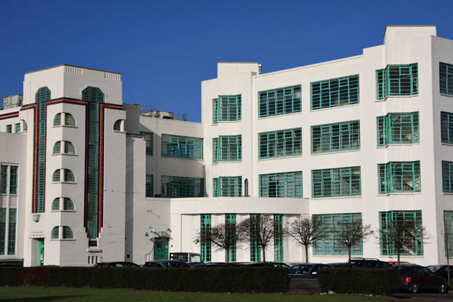
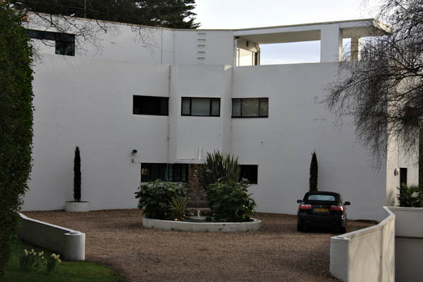
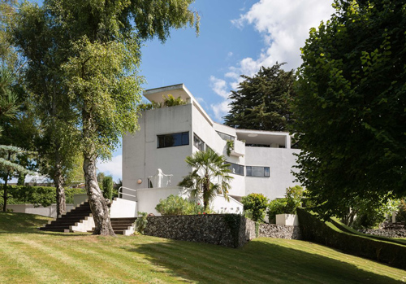
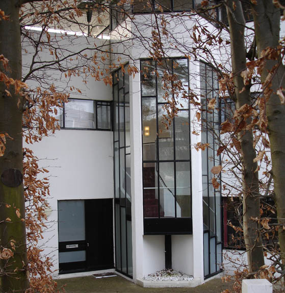
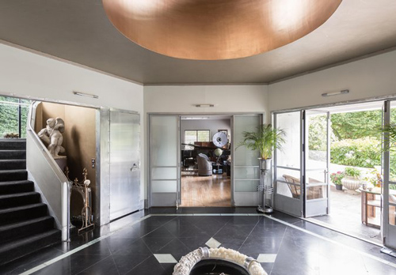

The corner of the Hoover Building, Perivale (also used in The Dream) - used as the exterior of Parade Studios.

High and Over, Amersham, Buckinghamshire designed by the New Zealand architect Amyas Connell for Prof. Bernard Ashmole (later Director of the British Museum). Completed in 1931. Used as Henry Reedburn's house.

High and Over (Rear View).

High and Over (side view).

High and Over (Interior).